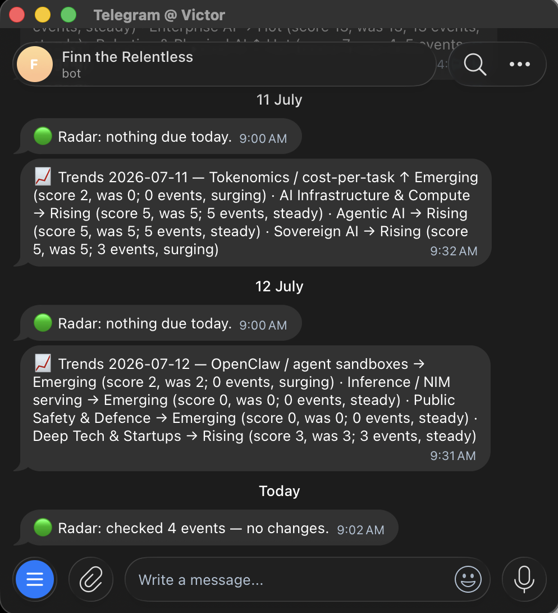
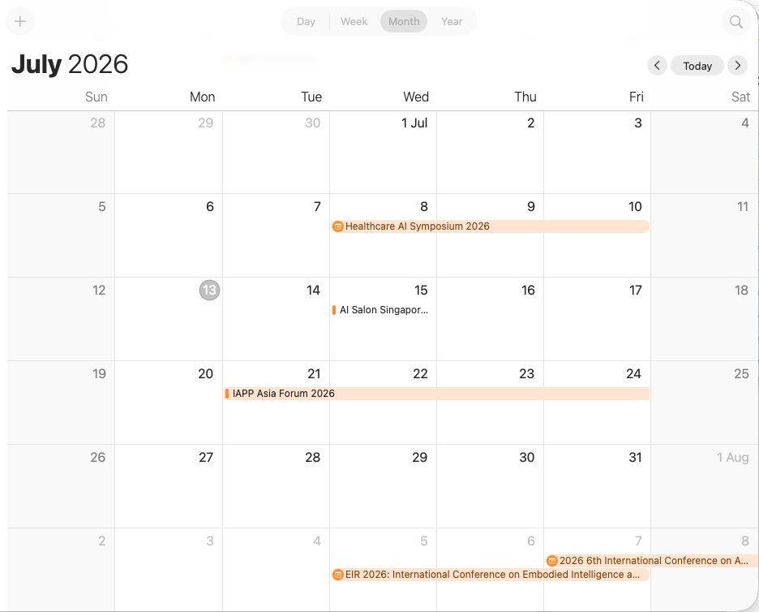
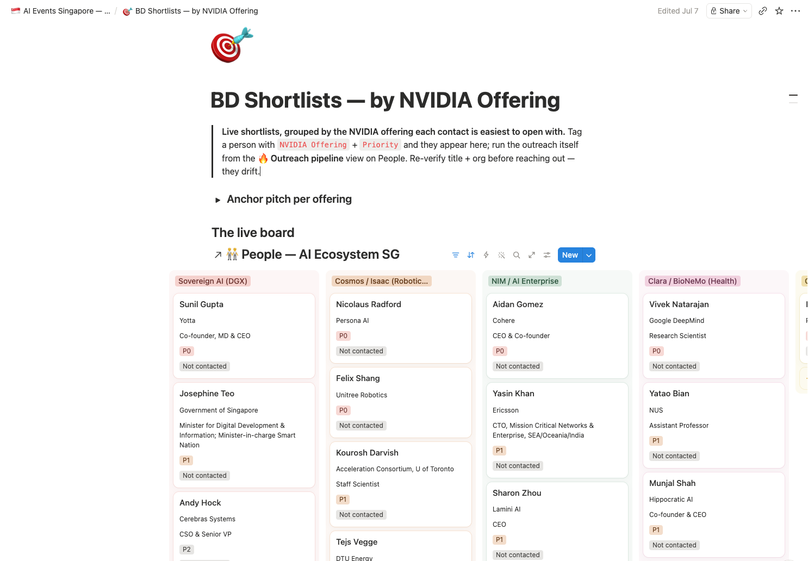

nemoclaw onboard --from the 2026.6.10 image · nemoclaw v0.0.68 ·
OpenClaw 2026.6.10 · Kimi K2.6 (compatible endpoint · OpenRouter fallback) · 2026-06-26 · rev 2026-07-12


brave search out-of-the-box + bundled Firecrawl fetch → reads any public URL server-side, no per-site allowlist.
DM the bot to drive it. Inbound is pairing-gated (dmPolicy=pairing) — the only way in.
Outlook / live.com via a zero-dep MCP server. Read by default; create/update/delete behind an opt-in.
Search + read pages/DBs via MCP; write opt-in. Sees only pages shared with the integration.
Proactive conference radar + topic trends + a weekly digest over a Notion knowledge base — three scheduled loops.
Our own auditable servers (raw stdio + fetch) — runtime add-ons, not baked into the image.
DM the bot on Telegram
Gateway → Kimi K2.6
web_search → brave
via L7 proxyweb_fetch → Firecrawl
via L7 proxycalendar / Notion (MCP)
optionalreply over Telegram
A scheduled layer that researches Singapore AI events (regional APAC = a speakers/trends watch), keeps Notion as the source of truth, and pushes a weekly digest. Producer loops write to Notion; the digest reads from it. A strict ownership matrix applies: loops write facts + cadence columns only; decisions stay human.
native on 2026.6.x — radar daily 09:00 · trends daily 09:30 (4-topic rotation) · digest Mon 10:00
drains the due queue, ≤8 events / run; writes cadence + changes
durable, human-curatable source of truth
reads what producers wrote
digest + trends summary · ⚠️ backlog alert
Pinned cron couldn't drive tools → moved the pin: OpenClaw 2026.6.10 (via a vendored, fail-closed 1-line NemoClaw patch) restored native scheduled tool-calling. All three loops run live in the gateway — heartbeats + digest observed over Telegram.
The 120B executor couldn't loop a list → prompts were one item per run (strong model authors, weak model executes). Measured on Kimi K2.6: a 5-event batch ran 85 s (~17 s/event) vs ~57 s for one cold single — 5 distinct research passes, 5 Notion writes, verified by effects. Scaffold dropped 2026-07-10; the loops now drain the due queue. A stronger model made the scaffold unnecessary.
Felt like: the agent reporting "I can't reach your calendar" — while every test we ran said the calendar tool was fine. Why: the sandbox runs each helper tool inside a sealed private network (a netns) with its settings stripped — and our tests ran outside the seal, so they always passed. Fix: the tool reads the network settings off its parent process and relaunches itself with them.
Felt like: every standard "is it up?" check said down — while the agent was still replying normally on Telegram. Why: that same sealed network hides the server from outside probes; they can't see in. Fix / lesson: trust the server's own log, never the probe — acting on the false "down" would have restarted a healthy service in a loop.
Felt like: we installed the calendar tool and the config listed it — the agent still said it didn't exist. Why: the agent builds its tool list once and caches it; a settings reload updates the file, not the cache — like an app that won't appear until you reboot. Fix: a full restart of the agent's gateway (and even finding the right process to restart had a trap).
Felt like: connecting a personal Outlook calendar should be simple — but the server-style credentials corporate apps use don't exist for personal accounts (no company behind them). Fix: a one-time, phone-style device-code sign-in mints a long-lived token, scoped to the minimum — read-only unless write access is explicitly switched on.
Felt like: the weekly digest died with "couldn't generate a response" — after doing all its reading perfectly. Why: the model thinks out loud into the same word budget as its answer — one long think left zero for the reply, and the cut-off bypasses retries. Fix: 4× the output budget — thinking room is answer room.
docs/LEARNINGS.md.notion-bootstrap.mjs so a from-scratch rebuild recreates them.nemoclaw-startweb_fetch: the sandbox still talks to one allowlisted host (api.firecrawl.dev) — Firecrawl's cloud fetches the page on finn's behalf. Net effect: the agent reads any public URL without widening the firewall.